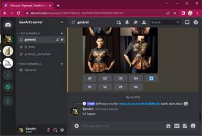
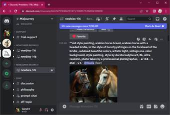
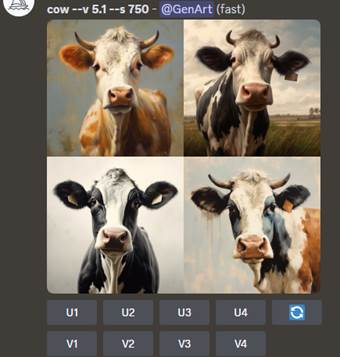
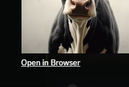

Tutorial MidJourney (part 1 -
dasar-dasar pembuatan gambar)
|
1 |
UI Discord Panel paling kiri penuh yang ikon adalah daftar server. Panel tengah adalah channel. Panel lebar di kanan adalah messages. Panel messages inii tempat kita berinteraksi, termasuk tempat membuat gambar. Di bagian bawah panel messages, adalah input tempat kita menulis prompt. |
 |
|
2 |
Server Pribadi dan Channel
Pribadi Kita bisa membuat gambar di server resmi MidJourney (ikon putih kapal layar), di channel newbies . Namun gambar kita akan campur dengan ribuan gambar lain milik user lain ❌ Lebih baik kita membuat server pribadi (ikon Macan Sewu di gambar contoh). Dalam server pribadi, selanjutnya kita juga bisa membuat channel-channel agar gambar kita lebih terkategorisasi dan mudah untuk kita cari ✔️ |
 |
|
3 |
Mulai Membuat Gambar Kita bisa membuat gambar dengan memanggil bot MidJourney untuk menjalankan perintah. Cara memanggil bot Di kanan bawah panel message, tekan tombol + Lalu pilih / Use Apps Lalu pilih /imagine prompt |
|
|
Lalu masukkan apa yang hendak kita gambar di inputan di belakang prompt. Input yang kita ketik ini istilahnya adalah prompt Ketik prompt, misal "cow" |
|
|
|
Gambar akan muncul. Sekali perintah imagine, kita dapat 4 variasi gambar. |
 |
|
|
4 |
Menyimpan Gambar Untuk memisahkan 1 gambar dari 4 gambar tsb, tekan U1/U2/U3/U4. (kiri atas, kanan atas, kiri
bawah, kanan bawah) Untuk menyimpan gambar, klik gambar. Akan muncul link Open in Browser . Tekan itu untuk mendapatkan gambar full resolution yang bisa kita simpan. |
 |
|
5 |
Template Prompt Umumnya, prompt MidJourney memiliki elemen-elemen: [ kata sifat] [ benda] [ tindakan] [ lokasi], [ media], [ gaya][ pencahayaan][mood] [ parameter tambahan] misal: a red horse galloping on the meadow, watercolor, wet-on-wet, moonlight, somber --ar 16:9 Pada contoh di atas, parameter tambahan adalah: --ar 16:9 yang membuat gambar hasil memiliki perbandingan lebar tinggi 16 banding 9 Aspek rasio populer: 16:9 (layar kompi) 9:16 (layar hp / IG story) 1:1 (IG post) 3:2 (foto) 2:3 (foto) 2:1 (ultrawide) |
|
|
|
Yang perlu diingat dalam
prompt: - grammar tidak penting - huruf besar atau kecil sama saja - koma, spasi, titik, tidak penting - posisi kata dalam kalimat biasanya tidak penting, kecuali kata membentuk frase dengan arti yg spesifik - urutan elemen-elemen (gaya, tindakan, benda, etc) biasanya tidak penting - hasil gambar akan selalu berbeda - kita bisa menambahkan parameter seed, misal: --seed 897912 agar noise yang digunakan di awal gambar sama. - Namun tidak ada jaminan gambar akhir bisa sama, kecuali bila prompt sama persis. |
|
|
6 |
Contoh Kata Sifat Populer beautiful gloomy dark black red orange rgb roygbiv dreamy-colors stripped wet shiny glossy grunge dirty old modern new classic ancient bioluminescent iridescent 8k hq uhd ultrarealistic hyperdetailed intricate atau X as Y X made of Y anthropomorphism |
|
|
7 |
Contoh Medium Populer photo painting oilpainting watercolor gouache comic-style line-art impasto statue porcelain terracotta ceramic caricature 3d-render pixar translucent installation-art bas-relief wood-carving miniature medieval-illuminated doll origami sculpture figurine action-figure polymer-clay stop-motion drawing child-drawing charcoal-sketch stippling engraving netsuke movie-still 80s-dvd-grab ukiyo-e woodblock-print |
|
|
8 |
Spesifikasi Kamera, Film, dan
Lensa untuk Medium Foto polaroid DSLR hasselblad fuji-x macro telelens anamorphic tilt-shift bokeh slow-shutter-speed motion-blur light-trail double-exposure lomography vintage-Kodak-120mm kodak-potra-400-35mm pinhole-camera daguerreotype |
|
|
9 |
Sudut Pandang Kamera close-up portrait full-body wide-angle super-macro font-view side-view back-view top-view low-angle-shot shoulder-shot POV selfie aerial-view fisheye-lens gopro isometric |
|
|
10 |
Pencahayaan cinematic dramatic unsplash natgeo studio-lighting golden-hour evening morning dusk dawn night volumetric-light rim-light blacklight x-ray infrared chiaroscuro luminous-backlit |
|
|
11 |
Time & Space Populer [nama daerah terkenal] moon-surface space underwater indoor cafe traditional-market warung suburban city-center village harbor beach abandoned-[fair/city/theater/building] magical-[forest/city/shop] |
|
|
12 |
Kata Kerja dynamic-action expressively-* passionately-kissing Kata Kerja Yang Syulit (saat ini) lokasi spasial, memegang senjata, memegang payung, interaksi dengan karakter tertentu |
|
|
13 |
Special Techniques food-photography product-design-photography splash-photography fashion-photography 16-bit knolling coloring-page synthwave cutaway-diagram stain-glass-window 3d-icon-sets --tile |
|
|
14 |
Mood Favorit serene,calm,romantic, jubilant, gloomy, whimsical, ecstatic, somber,
playful, melancholic, dreamy, thrilled, brooding, lighthearted, pensive,
exuberant, desolate, mischievous, contemplative, euphoric, despondent,
fanciful, cheerful, forlorn, carefree, introspective, radiant, morose,
buoyant, sullen, elated, crestfallen, delighted, despairing, giddy, downcast,
wistful, melancholy, enchanted, vivacious, dispirited, imaginative, exultant,
capricious, sorrowful, enchanting, animated, downhearted |
|
|
15 |
One-word Prompt, abstract
concepts, typos extreme slow sharp lonely waiting exploding-calmness broken-jump smooth-taunting-dreamy-growth [whatever]punk [whatever]core |
|
|
16 |
Negative prompts Perlu parameter tambahan di belakang prompt untuk menghalangi sesuatu muncul di gambar hasil. Biasanya untuk menghilangkan peratalan fotografi saat menyebut pemakaiannya. Juga untuk menghindari kemunculan teks, atau gambar yang terpisah menjadi beberapa panel. --no camera lens --no text caption mockup title watermark diptych triptych panel layout --no drawing painting outline sketch |
|
|
17 |
multiprompt prompt weighting kita bisa menulis beberapa prompt dengan memisahkan dengan :: sebagai contoh: rhino :: jeep :: underwater untuk setiap prompt bisa kita beri perbandingan bobot. bobot bisa negatif (yang berarti menghalangi kemunculan), namun total bobot harus positif. |
|
|
|
||

Tutorial MidJourney (part 2 -
menggunakan gambar rujukan)
|
18 |
blend Perintah /blend menggabungkan 2 s.d. 5 gambar menjadi 1 gambar. Penggabungan berdasar konsep visual. Hasil selalu memiliki aspek rasio 1:1 |
|
|
19 |
penggabungan gambar dengan
/imagine Perintah imagine bisa memiliki 1 gambar atau lebih yang digunakan sebagai acuan, jadi mirip perintah blend, namun lebih fleksibel. Formatnya: /imagine [url-1] [url-2]...[url-n] prompt [parameter tambahan] dimana url-1 dan seterusnya adalah URL gambar yang digunakan sebagai rujukan. Prompt harus ada, tidak boleh kosong. Parameter tambahan seperti biasa, bisa berupa aspek rasio atau lainnya. Parameter yang special untuk rujukan foto adalah: --iw 2.0 Yaitu untuk meniru foto rujukan semirip mungkin yg bisa dilakukan. |
|
|
20 |
describe /describe menjabarkan gambar yang diupload menurut penglihatan A.I. dalam suatu prompt. Tetap ada random, gambar yang sama akan dijabarkan secara berbeda. Deskripsi adalah berdasar konsep, sehingga tidak akan pernah sama bila prompt dijadikan gambar. |
|
|
21 |
sketch untuk rujukan pose dan
komposisi Kita bisa memasukkan suatu sketch untuk menuntun komposisi atau pose. Kita juga bisa menambahkan foto lain (yang hires) sebagai konteks tambahan dalam membuat gambar hasil. |
|
Tutorial MidJourney (part 3 -
variasi model MidJourney)
|
22 |
V5.0 Model ini dipilih dengan: --v 5 Hasil cenderung fotorealistik, sehingga sulit membuat gambar fantasi. |
|
|
23 |
V5.1 -style raw Model ini dipilih dengan: --v 5.1 --style raw Model 5.1 cenderung fantasi, dengan menambahkan style raw, efek fantasi diredam, sehingga hasil lebih ke realistik seperti v5.0 |
|
|
24 |
niji 5 model ini dipilih dengan: --niji 5 niji menghasilkan gambar bergaya anime atau manga |
|
|
25 |
niji 5 --style cute model ini dipilih dengan: --niji 5 --style cute model ini untuk membuat bergaya anime atau manga karakter yang unyu-unyu |
|
|
26 |
niji 5 --style expressive model ini dipilih dengan: --niji 5 --style expressive model ini untuk membuat gambar karakter bergaya anime atau manga dengan
gaya gambar yang memiliki shading atau 3d render |
|
|
27 |
niji 5 --style scenic model ini dipilih dengan: --niji 5 --style scenic model ini untuk membuat gambar pemandangan atau karakter bergaya
anime atau manga dengan latar belakang |
Tutorial MidJourney (part 4 -
ChatGPT+MJ)
|
28 |
Eksplorasi media dan gaya Kita bisa menggunakan bantuan ChatGPT untuk memberikan daftar gaya/genre/media yang bisa kita coba |
the following list is about distinct visual
genres/style/media: 1. ukiyo-e 2. impasto 3. dadaism collage 4. kintsugi 5. wet on wet watercolor ``` continue for 10 more |
|
29 |
Menjabarkan teknik dan gaya
artis Dengan merujuk gaya artis, kita bisa menirukan gaya yang mirip (banyak sumber rujukan, misalnya https://www.midlibrary.io/ ). Namun kita juga bisa meminta bantuan ChatGPT untuk menjabarkan gaya suatu karya, sehingga kita bisa mendapat lebih banyak insight untuk membantu melakukan ATM atau bahkan menggabung atau membuat variasi yang benar-benar baru. |
describe the features of hasui kawase artwork in list of visual keypoints, separated by commas |
|
30 |
Brainstorming ide ilustrasi dari
suatu cerita atau konsep ChatGPT juga bisa membantu kita untuk memberikan ide tentang konsep visual dari suatu narasi. Konsep visual itu bisa kita jadikan prompt untuk membuat ilustrasi.
|
i want to tell that story in 10 illustrations without
word, give me visual description for each |